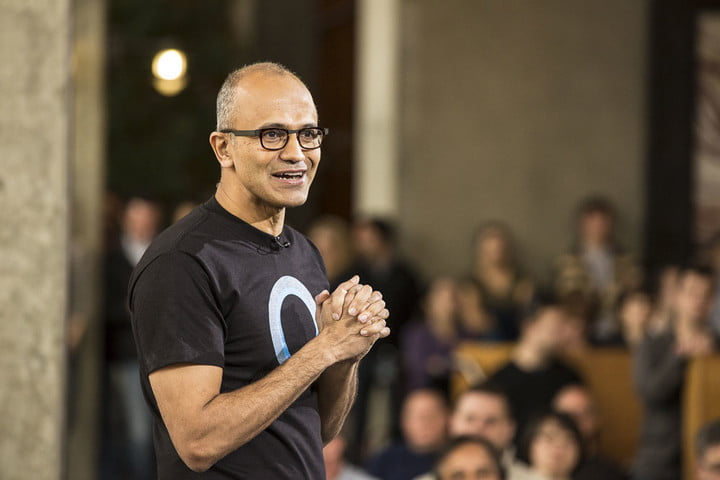

As with any type of innovation, there is a large group of people who hold a very optimistic point of view. Such a group of people is truly riding the wave of innovation, as they think that although some may see certain detriments that come with the ever-increasing pace of AI-tech development, the benefits that come along with it far outweigh the costs, figuratively and literally.
Usually, people cannot just follow an idea- there has to be a charismatic leader behind it for them to truly be convinced. For Microsoft corporation, that leader is Satya Nadella, a man who is at the forefront of AI development. He cites the fact that our world is far from perfect, saturated with poverty and wealth disparity, in order to make the claim that AI development can make the world far more inclusive. For Nadella and many others at the helm of big-name companies leading the AI movement, AI is an exciting possible solution for many of the world’s problems. The rise of AI can ultimately grant many oppressed and underprivileged people opportunities that were previously unavailable to them, thanks to the humanpower and capacity for simple work that a sophisticated AI has.
 Satya Nadella addressing a crowd. CNBC.Large companies like Nadella’s Microsoft, Jeff Bezos’s Amazon, and Sundar Pichai’s Google are examples of companies spearheading AI development due to their optimism regarding the field. While Nadella seeks to explore the ability of AI to propagate goodness and prosperity among humankind, Bezos seeks to enhance our lifestyles by providing robust infrastructure for shopping and delivery , while Pichai looks to optimize essential services like Maps, Gmail and Google Search by using AI
It isn’t just those at the cutting edge who are excited about the potential benefits of this technology, however. Your everyday technology enthusiast is also envisioning a bright future, filled with AI based tech. In particular, tech writers such as those at TechCrunch, CNET, and The Verge spare no expense publishing daily articles about new capabilities of AI tech.
Tech news publishes articles daily. InkVaultDesigns.Another reason this opportunistic viewpoint exists is that the benefits can simply outweigh the detriments. When looking at the benefits of AI technology, ranging from getting intelligent music suggestions in Spotify to being able to drive with your hands off the wheel on the highway, one can imagine imagine how the general public is quite taken with these technological advancements. In addition to these mere conveniences, AI based technology is working on a much larger scale, helping companies deliver more robust healthcare and improve infrastructure.
Overall, advancing AI technology could come about in a similar way to past innovations. From the creation of the automobile to the inception of the first computer, technological revolutions have consistently had positive net effects on history. Although we cannot ignore the costs associated with this innovation, AI-tech development is certainly a revolution with a large optimistic following.